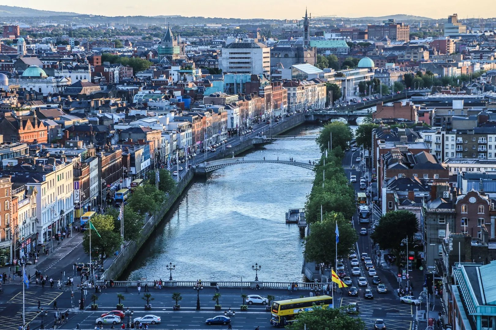
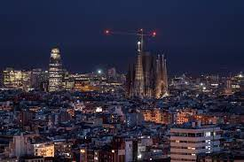

New York City, otherwise known as “The Big Apple,” is a bustling city in the United States of America.
Home to about 8 million people, New York City houses popular attractions such as the statue of liberty,
central park, the empire state building, and many more.
There are 5 boroughs within New York City, including Brooklyn, Manhattan, Staten Island,
Queens, Bronx. Each borough is filled with different sights to see. New York City has many
opportunities not only for those who live there, but also those visiting.
From navigating the subway system to seeing a Broadway show, it is impossible to get bored
Photo Gallery
Likes
Statue of Liberty
The Vessel
Empire State building
Yellowstone
Geographical Location: North America
Yellowstone is the first national park in the United States. It covers over 2.2 million acres, and provides an opportunity to see wildlife and explore geothermal areas. In fact, Yellowstone contains about half the world's active geysers.
Mammoth Hot Springs has a number of actively forming Travertine terraces.The drive to Lamar Valley requires some dangerous roads. But the result is amazing sunset views.The multicolored layers get their hues from different species of bacteria living in the cooler water around the spring.The buffalo were so common along the roads in Yellowstone that our mantra became "If it ain't lickin the car, we aren't stopping."If you can handle the odor, the Yellowstone Sulphur Springs is a great place to hike.
Reykjavík
Geographical Location: Europe
The city of Reykjavik is the capital of Iceland and is nestled on the coast. Reykjavik is filled with colorful
buildings and street art, which creates an inviting environment. As you stoll about the city, you will encounter
cozy cafes and enjoyable restaurants featuring Icelandic cuisine.
Iceland's Viking history and artistic heritage can be explored through the museums and landmarks in Reykjavik.
The city is also well-known for its geothermal pools, where tourists can unwind and relax while admiring the
surrounding landscapes.
Photo Gallery
Bruarfoss is known as “Iceland's Most Blue Waterfall” as the color of the water is popular.
This waterfall is a great location to add to your itinerary if you love nature.Geothermal pools are an essential visit. Reykjavik is quite well-known for its hot springs
and there are multiple hot springs located in the city.Kolaportið is an indoor flea market in Reykjavik and conveniently located in the city.
There are great deals at the market as well as food stalls.Reykjavik is known for its beautiful aurora borealis or northern lights. Available for most of the
year, the northern lights are a must-see attraction.Perlan is Reykjavik's Natural History Museum and it's a glass dome at the top of six water tanks.
It holds a glacier exhibition as well as an observation deck that overlooks the city.
Dublin

Geographical Location: Western Europe
Dublin City is the capital city of the Republic of Ireland and is located in the east of Ireland.
Dublin was originally a Viking settlement called Dubh Linn which translates to black pool.
Dublin has always been a historically significant city in Irish history,
from being the main city from which the British ruled over Ireland for 800 years
to then being the setting of the 1916 Easter Rising and Irish War of Independence.
Today Dublin is a developed city boasting one of the strongest tech sectors in Europe and a booming tourism industry.
Dublin is renowned for its sites such as the GPO, Croke Park, O'Connell Street, Temple Bar and Saint James Gate,
which is where Guinness is brewed. Dublin is also surrounded by great coastal towns such as Dun Laoghaire, Howth and Skerries.
Photo Gallery
The GPO was used in the 1916 Easter Rising as a rebel holdout. Scars from the battle such as bullet holes are still visible on its pillars today.
Croke Park is Ireland's largest stadium, known for hosting the All-Ireland football and hurling finals annually.
It has a capacity of 82,300 making it the 4th largest stadium in Europe.
O’Connell Street is Ireland’s main street. It’s named after Daniel O’Connell,
an Irish politician who fought for the unrepresented Irish catholics to have a voice in the British parliament whilst Ireland was still under British rule.
A statue was built in his honor at the end of the street.
Temple Bar is an area of Dublin City Centre that is named after the world famous pub, the Temple Bar.
It is a tourist hotspot and is the only pub in Ireland where you will not find a single Irish person.
It is also known to have one of the most expensive pints of Guinness in Ireland.
Saint James’s Gate is where Guinness is brewed. You are able to do a tour of the facility to see the history of Guinness,
how Guinness is brewed and have a pint right from the source.
Barcelona
Geographical location: Europe
Barcelona, is a beautiful city on the Northeastern coast of Spain that is the byproduct of a rich and artistic history with
modern infrastructure. One of the main attractions of the city is its gorgeous architecture, often the work of world renowned
architects such as Antoni Gaudi. Some of the most notable works are the modern Basilica of La Sagrada Familia, and the tranquil
and eloquent Park Güell.
Much of Barcelona’s charm comes down to local culture, from diverse culinary offerings, to the sunny vacation-ridden atmosphere
of the beaches, and even the symbolism of nationalism and independence that Barcelona residents display. The passion of the locals
is unwavering, including in famous soccer matches by one of the sports greatest clubs: F.C. Barcelona, and in numerous local artistry
events. It is no wonder why many travelers to Spain feel rejuvenated and fortunate enough to have experienced the city’s irresistibly
strong culture and atmosphere.
Photo Gallery
The view from the world famous Park GüellBarcelona fans demonstrate their passion from the Camp NouView of a popular strip on Barcelona’s most famous beachA stunning display of modern structure with vintage architecture at La Sagrada Familia

Night view of the contrast between modern and classical Barcelona
PaloAlto
Geographical Location: North America
Palo Alto is a city located in the San Francisco Bay Area in California. Palo Alto was established in
1894 when Leland Stanford founded Stanford University. It is named after a costal redwood tree
called El Palo Alto. It is home to many tech companies and startups, as well as Stanford University.
Palo Alto has two main commercial areas, University Ave and California Ave, both of which have
delicious restaurants and stores. Many people come to Palo Alto to see Stanford, but there’s so much
more to do. Palo Alto is home to many nature preserves such as Foothills Park and the Baylands,
which are popular for hiking, walking, biking, and other outdoor activities.
Photo Gallery
The farmers market is the place to buy fresh fruits and vegetables and people watch
Pickleball is a rapidly growing sport popular in Palo Alto Biking is a great way to get around town Baylands is very pretty especially in the spring
The lake at Foothills is great for kayaking or canoeing